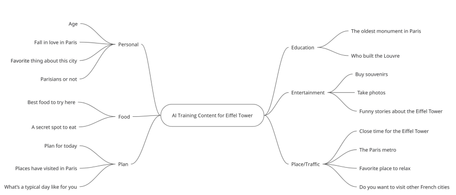
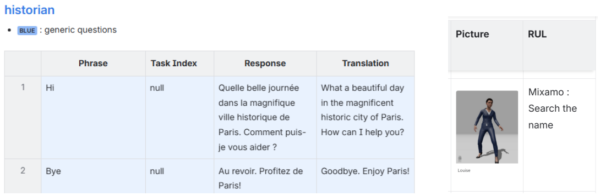
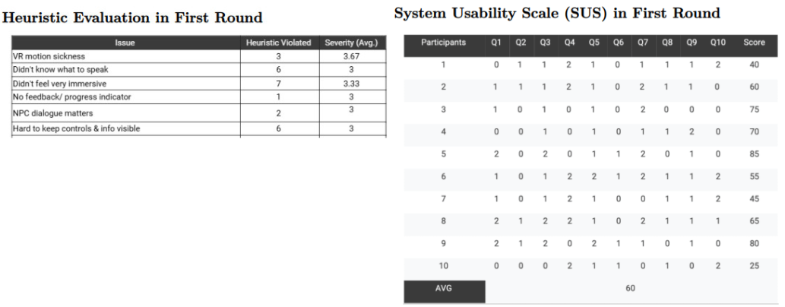

This project explores how AI and virtual reality can reshape language learning into a more immersive and practical experience. Developed in collaboration with IBM, the platform simulates real-world travel scenarios where users interact with AI-powered characters to practice language through natural conversation. Positioned within the edutainment space, the product bridges structured education and interactive gameplay, allowing learners to move beyond memorisation and into real-life communication.
Traditional language learning often creates a gap between knowledge and application. Many learners understand grammar and vocabulary but struggle to use them in authentic situations. Structured, classroom-based methods tend to focus on accuracy rather than communication, while social pressure can discourage learners from speaking freely. This combination results in limited practical experience and reduced confidence when using a new language.
To address these challenges, the product was designed around task-based gameplay within an immersive VR environment. Users follow a narrative, “Where is My Tour Guide?”, progressing through locations in Paris by interacting with non-playable characters. These interactions are not scripted but dynamic, allowing users to engage in spontaneous dialogue that reflects real-world communication. By placing learners in a private, simulated environment, the experience reduces performance anxiety and encourages exploration at their own pace.
My primary contribution focused on AI dialogue design and evaluation. I was responsible for the Eiffel Tower scene, which was intentionally designed as a social setting rather than a transactional one. Unlike scenarios such as booking a hotel or ordering food, this environment encouraged casual, everyday conversations with both locals and tourists. The goal was to create a space where users could practice natural dialogue while still achieving educational outcomes. I first brainstormed potential conversational catgories in a mind map, then mapped out the dialogue structure using flowcharts to visualise how different interactions would unfold based on user input.

After designing the conversational flows for four main characters, I collected NPC model assets and implemented the dialogue content using IBM Watsonx Assistant, enabling real-time voice interaction through speech-to-text and text-to-speech systems.

The JSON snippet below demonstrates a typical response returned by Watsonx Assistant.
In addition to designing the dialogue, I structured the AI workflow and testing process. The system included 46 dialogue actions, each with more than 16 possible responses, resulting in over 700 test cases. To improve efficiency, I organised testing by actions rather than by locations, making it easier to validate and maintain the content. Due to limitations in the platform, such as the absence of version history, I created detailed documentation including action IDs, example phrases, and expected responses. This approach reduced errors and streamlined the testing process across the team.
I also played a key role in managing the Agile workflow. At the beginning of the project, I led the team in defining the MVP and aligning the development scope with IBM, ensuring a clear and realistic foundation for delivery. Throughout the project, I facilitated weekly sprint reviews where the team demonstrated progress, discussed challenges, and defined goals for the next iteration. I coordinated communication between team members, our supervisor, and IBM, while ensuring that both internal and shared documentation remained up to date. This helped maintain alignment across design and development and kept the project progressing efficiently.
Evaluation was a critical part of the development process. Across three rounds of testing, we identified recurring usability challenges, including confusion at the starting point, difficulty using VR controllers, and uncertainty around interaction flows. In the third evaluation, I refined the methodology by improving onboarding instructions and using open-ended questions to encourage more detailed feedback. These changes significantly increased both the quantity and quality of insights, with feedback rising from 26 to 91 responses. After consolidating the data, we identified 22 key issues, allowing the team to prioritise the most impactful improvements. This demonstrated that thoughtful evaluation design can generate meaningful insights even with a small participant group.

The platform was built using IBM Watsonx Assistant for AI dialogue training, supported by speech-to-text and text-to-speech technologies for voice interaction. Unity was used to create the immersive VR environment, while C++ enabled communication between systems and controlled interactions within the application.
Despite its strengths, the project faced several constraints. Due to time limitations, English translation was not fully implemented, which affected usability and limited the quality of feedback during testing. Additionally, restrictions on STT and TTS API usage meant that not all dialogue scenarios could be thoroughly tested. These trade-offs highlighted the importance of prioritisation in early-stage product development.
Overall, this project demonstrates the potential of combining AI and VR to create more engaging and effective language learning experiences. It highlights how immersive environments can reduce anxiety, how dynamic dialogue can improve practical communication skills, and how iterative evaluation can drive meaningful product improvements. Looking forward, the platform could be expanded with real-time translation, broader language support, and more personalised learning experiences based on user behaviour.